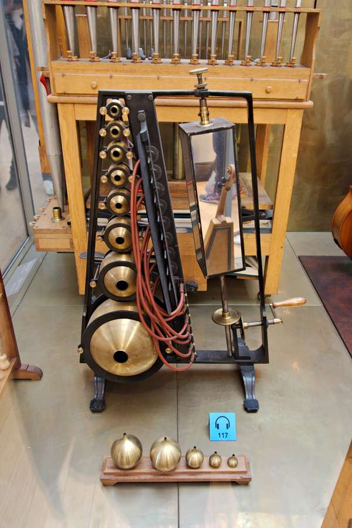
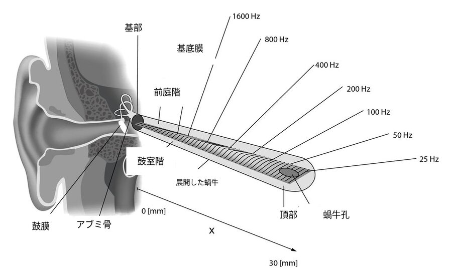

知覚・錯覚
あなたの耳に届いているのは空気の振動だけだ。「ドの音」も「雨の音」も、脳が勝手に作った解釈にすぎない。世界は、永遠に無音である。
ヘルムホルツが『音の感覚論』を刊行。音の物理的性質と人間の聴覚知覚を体系的に結びつけた最初の著作。
同年、リンカーンが奴隷解放宣言に署名。ロンドンで世界初の地下鉄が開業。ゲティスバーグの戦いが南北戦争の転換点となった年でもある。
ヘルムホルツから160年以上。音の物理学は解明された。しかし「なぜ440Hzが"ラの音"に聞こえるのか」は、いまだ誰も説明できない。
雨が降り始めると、窓を閉めなくても音でわかる。ぽつぽつという音、ざあざあという音。目を閉じていてもそれが雨だとわかる。音は、そこに「ある」ように感じる——空間に満ちて、雨粒のひとつひとつが小さな声を出しているかのように。
しかし、雨粒は何も発していない。水が路面や窓ガラスにぶつかり、空気が震える。その振動が鼓膜を揺らし、蝸牛を震わせ、電気信号に変換されて脳に届く。脳がその信号を「ぽつぽつ」や「ざあざあ」に変換する。音を作っているのは、雨ではない。
空気の振動は存在する。しかし「音」は脳の中にしかない。
振動を指先で操り、脳が「音」を構築する仕組みを体感する。聞こえているものが空気の物理現象そのものではないということを、知識と体験の両面から確かめる。
ヘルマン・フォン・ヘルムホルツヘルマン・フォン・ヘルムホルツ（1821–1894）
ドイツの物理学者・生理学者。視覚と聴覚の両方を研究し、眼底鏡を発明した人物でもある。は最初に眼を研究した。眼底鏡を発明し、網膜を観察し、色覚の仕組みを解き明かした。その成功の次に彼が取り組んだのが耳だった。1863年に刊行された『音の感覚論（Die Lehre von den Tonempfindungen）』は576ページ。物理学・解剖学・生理学・美学を横断する異例の著作だった。
ヘルムホルツの問いはこうだ。音という物理現象と、人間が感じる「音の体験」は、どこで、どのように接続しているのか。彼はまず、音の物理的な正体を整理した。空気の振動——疎密波。スピーカーの膜が前に出れば空気が圧縮され、引けば膨張する。この密と疎の繰り返しが波として伝わる。
音源の振動が空気分子の「密」と「疎」を作る。これが音の物理的正体——疎密波だ。波自体には「ド」も「ラ」もない。
"The sensation of sound is the ear's peculiar reaction to external stimuli. It cannot be produced in any other organ of the body."
音の感覚は、外的刺激に対する耳に固有の反応である。身体のほかのどの器官でも生じさせることができない。
— ヘルムホルツ『音の感覚論』（1863年）

1870年製のヘルムホルツ共鳴器（グラスゴー大学ハンテリアン博物館所蔵）。大きさごとに異なる周波数に共鳴する——ヘルムホルツはこの真鍮球を耳に当て、複雑な音から特定の周波数成分を聴き分けた。彼が蝸牛の内部でも同じことが起きていると考えた理由がここにある（撮影: Stephencdickson, CC BY-SA 4.0）
ここで「色は存在しない」の記事を読んだ方なら、既視感があるだろう。光は電磁波電磁波（Electromagnetic wave）
電場と磁場の振動が伝わる波。真空中でも伝播する。光・電波・X線はすべて電磁波。であり、音は疎密波疎密波（Longitudinal wave）
振動の方向と波の進む方向が同じ波。空気が押されたり引かれたりして伝わる。音波が代表例。だ。どちらも脳がラベルを貼っているという構造は同じだが、波の仕組みそのものは根本的に異なる。なぜ片方は真空で伝わり、もう片方は伝わらないのか。
光（横波）は電場と磁場が交互に生まれて進むので媒質が不要。音（縦波）は空気分子が隣の分子を押す連鎖なので、分子がないと止まる。宇宙が無音なのはこのためだ。
光は横波だ。電場の振動が磁場を生み、その磁場がまた電場を生む。このキャッチボールが空間を伝播する。媒質は要らない。だから真空でも届く。一方、音は縦波だ。空気分子がひとつ隣の分子を押し、押された分子がさらに隣を押す。玉突きの連鎖。玉がなければ——つまり空気がなければ——連鎖は起きない。宇宙空間が無音であるのは、玉突きの玉が存在しないからだ。
| 色（光） | 音 | |
|---|---|---|
| 物理的な正体 | 電磁波（横波） | 疎密波（縦波） |
| 伝わる仕組み | 電場⇄磁場のキャッチボール | 分子が隣の分子を押す連鎖 |
| 真空で伝わるか | 伝わる（媒質不要） | 伝わらない（媒質が必要） |
| 何が異なると知覚が変わるか | 波長（nm） | 周波数（Hz） |
| 受容器 | 網膜の錐体細胞（3種） | 蝸牛の有毛細胞（約3,500個） |
| 脳が作るもの | 「赤さ」「青さ」 | 「高さ」「音色」 |

蝸牛をカタツムリ状から展開した模式図。基底膜は基部（アブミ骨側）で狭く硬く、頂部（蝸牛孔側）に向かって広く柔らかくなる。この幅と柔軟性の勾配により、場所ごとに異なる周波数に反応する——1600Hzは基部、25Hzは頂部。ヘルムホルツが1863年に推測した「蝸牛はピアノの弦のように機能する」という直感は、おおむね正しかった（原図: Kern et al., CC BY 2.5、ラベルを日本語化）
✗ よくある誤解
鈴が鳴っている。鈴から「音」が出ている。
✓ 実際は
鈴は振動して空気を震わせているだけ。「チリン」という音は脳が作る知覚。
✗ よくある誤解
良いスピーカーは「正確な音」を再現する。
✓ 実際は
スピーカーが再現するのは空気の振動パターン。「音」に変換するのは聴く人の脳。
✗ よくある誤解
440Hzは「ラの音」だ。自然がそう決めた。
✓ 実際は
440Hzの振動を「ラ」と名付けたのは1939年の国際会議。周波数に音名は刻まれていない。
音の物理学は単純だ。物体が振動し、空気が押されたり引かれたりする。1秒間にこの振動が何回起きるかを周波数と呼び、単位はヘルツ（Hz）ヘルツ（Hz）
1秒間の振動回数。ハインリヒ・ヘルツにちなむ。440Hzなら1秒に440回振動する。。人間の耳は約20Hzから20,000Hzまでを検出できる。犬は約45,000Hz、コウモリは110,000Hzまで聞こえる。同じ空気の振動が、動物によってまったく違う「音の世界」になる。
色の記事で「電磁波スペクトルのうち人間に見えるのはほんの一部」という図があった。音でも同じだ。空気の振動にはさまざまな周波数があるが、人間の耳が拾えるのは20〜20,000Hzの狭い帯域だけ。
人間の可聴域は振動の全スペクトルのほんの一部。光のスペクトルで「見える」のがわずかな帯域だったのと同じ構造だ。振動は同じ。それをどの範囲で拾うかが動物によって異なる。
スライダーを動かして、周波数と「脳が感じる音の高さ」の関係を確認しよう。物理的にはただの振動の速さの違い。「高い・低い」は脳のラベルだ。
440 Hz
A4（ラ）付近
ピアノの88鍵（A0 = 27.5Hz 〜 C8 = 4,186Hz）は人間の可聴域のほぼ全域をカバーしている。C4は「真ん中のド」、A4が440Hzの基準音。数字はオクターブ番号。
可聴域のうち体感しやすい20～4,200Hzに絞っている（ピアノの88鍵をカバー）。20Hzの振動は「聞く」よりも「感じる」に近い。周波数そのものに「高い」「低い」はない——脳がそう翻訳している。
蝸牛の内部では、約35mmの基底膜基底膜（Basilar membrane）
蝸牛内部を走る約35mmの膜。基部は狭く硬く（高い周波数に反応）、頂部は幅広く柔らかい（低い周波数に反応）。周波数を「場所」に変換する。が周波数を「場所」に変換している。基部は硬くて薄く、高い周波数で振動する。頂部に向かうにつれ幅が広がり、低い周波数に応答する。20,000Hzは入口、20Hzは奥。この仕組みをトノトピートノトピー（Tonotopy）
周波数と場所の対応関係。蝸牛から聴覚皮質に至るまで保存される。ギリシャ語で「音の場所」。と呼ぶ。
蝸牛の基底膜を展開した模式図。ボタンを押すと、その周波数で基底膜のどの位置が最も強く振動するかがハイライトされる。
ボタンを押してみよう。高い音は入口（基部）で、低い音は奥（頂部）で振動する。
1961年、ゲオルク・フォン・ベケシーゲオルク・フォン・ベケシー（1899–1972）
ハンガリー出身の生物物理学者。蝸牛内の進行波を観察し、1961年にノーベル生理学・医学賞を受賞。がこの仕組みの実証でノーベル賞を受けた。人間の側頭骨から蝸牛を取り出し、ストロボ光と顕微鏡で基底膜の動きを直接観察した。音の振動は蝸牛の中を波として進み、周波数に応じた場所でピークを迎えて急速に減衰する——「進行波」だ。
色と音は「脳が作る」という点では同じだが、決定的に異なる性質がひとつある。色は混ざると元に戻せないが、音は同時に鳴っても分離できる。
色（光）の場合
混ざると元の赤・緑は
見えなくなる
音の場合
同時に鳴っても
別々に聞こえる
なぜか？ 蝸牛の基底膜が周波数ごとに異なる場所で振動するため、異なる音源を物理的に「場所で」分離できる。網膜には同等の仕組みがない（3種の錐体が混合信号を送る）。オーケストラの中でバイオリンとフルートを聞き分けられるのは、蝸牛のトノトピーのおかげだ。
蝸牛が周波数を「場所」に変換し、有毛細胞がそれを電気信号に変え、聴神経が脳に送る。ここまでは測定できる。しかし、その電気信号がなぜ「ドの音」として意識に上るのか——その接続は誰も説明できない。色と同じだ。波長620nmが「赤い感じ」になるのと、440Hzが「ラの音に聞こえる」のは、同じ種類の謎を抱えている。
脳が音を「作っている」ことを、もう少し直接的に体験してみよう。以下の体験では、物理的には存在しない音を脳が聴いてしまう現象と、「音の解釈」が人によって異なることを確認する。知識として知っているのと、実際に体感するのは別の話だ。
電話で男性の低い声を聞いたことがあるだろう。しかし一般的な電話は300Hz以下の周波数を伝送しない。男性の声の基本周波数は100～150Hz程度。つまり、声の最も低い成分は物理的に電話線を通っていない。それなのに声が「低く」聞こえるのはなぜか？
体験1で「脳が存在しない音を聴く」ことを知った。この体験ではもう一歩先に進む。同じ物理的な音を聴いても、人によって違う音に聞こえることを確かめる。
仕組みを説明する。下のボタンを押すと、2つの音が順番に鳴る。どちらも基本周波数が取り除かれている——倍音（200Hz, 300Hz, 400Hz...）だけが鳴っている。1つ目は基本周波数200Hzの倍音列、2つ目は250Hzの倍音列だ。
ここで脳は2つの異なる戦略を取りうる。戦略A: 倍音のパターンから「失われた基音」を推測する。この場合、200Hz→250Hzなので「上がった」と聞こえる。戦略B: 倍音そのもの（スペクトル全体の重心）に注目する。この場合、2つ目の方が倍音が密集して聞こえるため「下がった」と感じることがある。
2015年のボストン大学の研究では、声調言語（中国語など）の話者は戦略Aを取りやすく、英語話者は戦略Bを取りやすいことが報告された。どちらも「正解」であり、脳が育った言語環境によって音の翻訳の方法が違うだけだ。
この実験が示しているのは、音のピッチ（高さ）が物理的な周波数と1対1に対応するわけではない、ということだ。脳はパターンから音を「計算」する。そしてその計算のしかたは、育った言語環境によって変わる。あなたが聴いた音は、隣の人が聴いた音と同じではないかもしれない。
空気の振動が脳の中で「音」になるプロセスは、驚くほど多段階だ。そしてどの段階でも、情報は圧縮され、変換され、解釈される。入力と出力はまるで別物になる。
音の構築 — 4つのステップ
凡例: ● 音の本質に関わる発見 ○ 関連する出来事
1863
ヘルムホルツ『音の感覚論』
音の物理・耳の生理学・音楽の美学を統合した著作。蝸牛内に異なる周波数に共鳴する繊維が並ぶという「場所理論」を提唱。
1924
ベケシーの蝸牛研究始まる
ハンガリーの電話会社技術者だったベケシーが、電話の音質改善をきっかけに蝸牛の力学的研究を開始。
1940
スハウテンが「残留ピッチ」を発見
基本周波数がなくても倍音があればピッチが知覚されることを実証。脳が物理的に存在しない音を「聴いている」証拠。
1952
ジョン・ケージ『4分33秒』初演
一音も演奏しない楽曲。「沈黙は存在しない」というケージの洞察は、音が環境と脳の関係で成立することを芸術として示した。
1961
ベケシーにノーベル賞
蝸牛内の進行波の観察で受賞。基底膜の物理特性がトノトピーを作ることを実験的に証明した。
1978
最初の多チャンネル人工内耳
蝸牛のトノトピーを利用し、電極を周波数帯ごとに配置。「音」を電気信号で脳に送り込む——逆方向の実験。
2015
言語経験がピッチ知覚を変える
ボストン大学のペラキオーネらが、英語話者と声調言語話者で「失われた基音」の聴こえ方が異なることを報告。
整理しよう。物理の世界には空気の振動がある。疎密波。周波数。振幅。それだけだ。この振動を耳が拾い、蝸牛が周波数を場所に変換し、有毛細胞が電気信号に変え、聴神経が脳に送る。脳がそれを「ドの音」「雨の音」「母親の声」に仕立て上げる。
"There's no such thing as silence. What they thought was silence, because they didn't know how to listen, was full of accidental sounds."
沈黙など存在しない。彼らが沈黙だと思ったのは、聴き方を知らなかっただけだ。そこは偶然の音で満ちていた。
— ジョン・ケージ、『4分33秒』初演後の発言（1952年）
色は存在しない、という記事を読んだ人にはおなじみの構造だろう。波長に色はなく、脳が塗った。振動に音はなく、脳が聴いた。では味はどうか。匂いはどうか。五感のすべてが、同じ構造をしている可能性がある——物理的な入力を、脳が「体験」に翻訳している。
だがここに微妙な問題がある。「音は脳が作ったもの」と言うとき、まるで音が「嘘」であるかのように聞こえるかもしれない。そうではない。脳が作った音のおかげで、私たちは背後から近づく車に気づくし、声のトーンで相手の感情を読むし、モーツァルトに涙する。「構築されたもの」は「役に立たないもの」ではない。
それでも問いは残る。あなたが聴いている「ラの音」と、隣の人が聴いている「ラの音」は、同じ体験だろうか。色のクオリアと同じ問いだ。蝸牛の振動は測れる。聴神経の発火パターンは記録できる。しかし「ラの音に聞こえる感じ」そのものは、どんな機器でも観測できない。
文化への登場
ジョン・ケージ『4分33秒』（1952）
演奏者が一音も出さない楽曲。聴衆は咳、衣擦れ、空調の音を聴く。「沈黙は存在しない」というケージの主張は、音が環境との関係で成立することを示した。
映画『エイリアン』のキャッチコピー（1979）
「宇宙では、あなたの悲鳴は誰にも聞こえない（In space no one can hear you scream）」。真空では音が伝わらないという物理的事実をホラーに転用した。
人工内耳と「音の再構築」
人工内耳は蝸牛に直接電極を挿し、音を電気信号として脳に送る。装用者の多くが最初に聴く音を「ロボットの声のようだ」と表現する——脳がまだ新しい信号パターンを「音」に翻訳する方法を学んでいない状態。
天の川の中心部。ここには空気がない。どれだけ巨大な爆発が起きても、振動を伝える媒体がなければ「音」は存在しえない
On the Sensations of Tone as a Physiological Basis for the Theory of Music
音の物理学と聴覚の生理学を結合させた記念碑的著作。576ページあるが、冒頭の「音楽的音と騒音の違い」に関する記述だけでも読む価値がある。ヘルムホルツが蝸牛をピアノの弦に例えた比喩は、160年経った今もほぼ正しい。
Revisiting place and temporal theories of pitch
ピッチ知覚の「場所理論」と「時間理論」の最新の論争を整理した総説。「失われた基音」問題がどちらの理論で説明できるかを検討している。音の知覚研究の現在地が俯瞰できる。
Cochlear tonotopy from proteins to perception
蝸牛のトノトピーがタンパク質レベルからどう構築されるかを追った論文。有毛細胞の束の高さが基部から頂部にかけて変化するグラデーションの図が美しい。
Missing Fundamentals — Auditory Neuroscience
失われた基音の現象を音声デモ付きで解説。実際に基本周波数を取り除いた音を聴きながら読めるので、この記事の体験セクションをさらに深めたい人に。